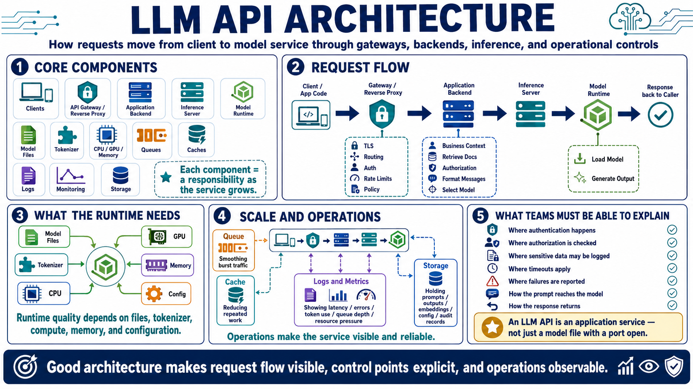

Core Architecture Components
Connecting to LMS... Progress: in progress

Narration
A typical LLM API architecture includes clients, an API gateway or reverse proxy, an application backend, an inference server, a model runtime, model files, a tokenizer, compute resources, queues, caches, logs, monitoring, and storage. Not every system needs every component on day one, but each component represents a responsibility that becomes important as the service grows.
Requests usually begin in application code or a user-facing client. The request may pass through a gateway or reverse proxy that handles TLS, routing, authentication, rate limits, and policy checks. The application backend may add business context, retrieve documents, apply authorization, format messages, or select a model. The inference server then passes the prepared request to a runtime that loads the model and produces output.
The model runtime depends on model files, tokenizer information, CPU resources, GPU resources, memory, and configuration. Queues can smooth bursts of demand. Caches may reduce repeated work for embeddings or common requests. Logs and metrics provide visibility into latency, errors, token use, queue depth, and resource pressure. Storage may hold prompts, outputs, embeddings, configuration, or audit records depending on the design.
Good architecture makes request flow visible. Teams should be able to explain how a prompt moves from caller to model and how the response returns. They should know where authentication happens, where user authorization is checked, where sensitive data may be logged, where timeouts apply, and where failures are reported. An LLM API is an application service, not a single model file with a port open.